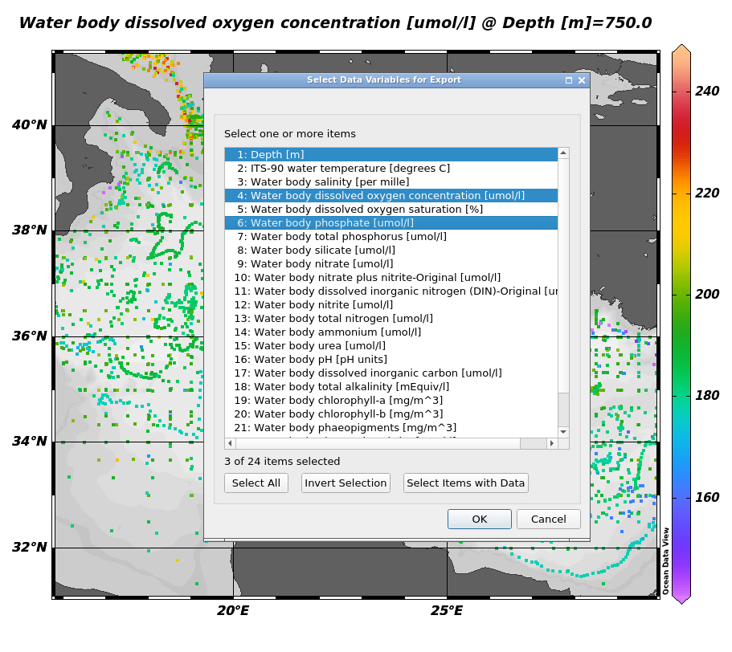

Through this tutorial, you will learn in the first part how to import, visualise, and extract data from an ODV collection by using the ODV Galaxy interactive tool. In the second part, you will learn how to use DIVAnd using the inputs the outputs from ODV.
Ocean Data View (ODV) is a software package for the interactive exploration, analysis and visualization of oceanographic and other geo-referenced profile, time-series, trajectory, or sequence data. To know more about ODV go check the official page
DIVAnd (Data-Interpolating Variational Analysis in n dimensions) performs an n-dimensional variational analysis/gridding of arbitrarily located observations. Observations will be interpolated/analyzed on a curvilinear grid in 1, 2, 3 or more dimensions. See the official page
ODV is now integrated in Galaxy as an interactive tool. This kind of tool works differently than classical tools as it allows the user to interact in an interactive way with your data.
This kind of tool is used to give access to Jupyter notebooks, RStudio or R Shiny apps for example.
To use ODV, you need to use the dedicated form, you can specify input datasets from your history you want to use in ODV, then press the execute button to launch an ODV instance. When the graphical user interface of ODV is ready to be used, a URL will be displayed at the top of the Galaxy center panel. If you don’t see it, you can see and access it through the “Active InteractiveTools” space of the “User” menu or you can click on galaxy-eye on the tool in the history.
Once you finish your work on ODV, if you want to retrieve data and/or the entire project, you need to save files in ODV/galaxy/outputs, then quit ODV properly through the “Project” Menu tab.
You can come back to where you left off the tutorial anytime by clicking level.
Hands-on: Log in to Galaxy
Open your favorite browser (Chrome, Safari or Firefox as your browser, not Internet Explorer!)
The first time you use Galaxy, there will be no files in your history panel.
Hands-on: Deploy your own ODV instance
Create a new history for this tutorial and give it a name (for example “Ocean’s variables”) for you to find it again later if needed.
Click the new-history icon at the top of the history panel.
If the new-history is missing:
Click on the galaxy-gear icon (History options) on the top of the history panel
Select the option Create New from the menu
Import a ODV collection data locally as a zip folder.
Click on Upload Data on the top of the left panel
Click on Choose local file and select the files or drop the files in the Drop files here part
Click on Start
Click on Close
Ocean Data View with the following parameters:
“Select if you are using an ODV collection in a zip folder or if you have your own raw data”: The data you are using are an ODV collection in a zip folder
“ODV collection in a zip folder.”: Eutrophication_Med_profiles_2022_unrestricted_SNAPSHOT_2023-10-24T16-39-44.zip
The data here are Mediterranean Sea - Eutrophication and Acidity aggregated datasets
EMODnet Chemistry aims to provide access to marine chemistry datasets and derived data products concerning eutrophication, acidity, and contaminants. The importance of the selected substances and other parameters relates to the Marine Strategy Framework Directive (MSFD). This aggregated dataset contains all unrestricted EMODnet Chemistry data on eutrophication and acidity and covers the Mediterranean Sea. Data were aggregated and quality controlled by the ‘Hellenic Centre for Marine Research, Hellenic National Oceanographic Data Centre (HCMR/HNODC)’ in Greece.
ITS-90 water temperature and water body salinity variables have also been included (‘as are’) to complete the eutrophication and acidity data. If you use these variables for calculations, please refer to SeaDataNet for the quality flags: https://www.seadatanet.org/Products/Aggregated-datasets.
Regional datasets concerning eutrophication and acidity are automatically harvested, and the resulting collections are aggregated and quality-controlled using ODV Software and following a common methodology for all sea regions ( https://doi.org/10.13120/8xm0-5m67). Parameter names are based on P35 vocabulary, which relates to EMODnet Chemistry aggregated parameter names and is available at: https://vocab.nerc.ac.uk/search_nvs/P35/.
When not present in the original data, water body nitrate plus nitrite was calculated by summing all nitrate and nitrite parameters. The same procedure was applied for water body dissolved inorganic nitrogen (DIN), which was calculated by summing all nitrate, nitrite, and ammonium parameters. Concentrations per unit mass were converted to a unit volume using a constant density of 1.25 kg/L. Hellenic Centre for Marine Research, Hellenic National Oceanographic Data Centre (HCMR/HNODC) 2022
Ocean Data View
Visualise your Data
You can expand the ODV left panel (where there are 3 dots, vertically) to access the “clipboard” menu and paste the content you want to paste on an ODV form. From there you can copy-paste everything from one side to the other. Then, click outside of this panel to collapse it.
If at one point your ODV interface becomes grey with a red panel on the top “X ODV - Disconnected”, do NOT panic ;) you just need to reload your tab (circular arrow top left)
Hands-on: Loading data
Click on close of the pop-up screen for the check for Updates
Go the top left and click on File, then on Open…
On the pop-up screen on the left panel select ODV, then the folder galaxy, then data.
You should see a folder open it (double clicking)
Select the file with a .odv extension
Click on Open in the bottom right
There your data should be opening an you can now visualise them!
Question
What are the longitude and latitude of the red dot?
On the to right window you can read Longitude 34°E and Latitude 32.332°N.
Subset Data
Hands-on: Create a subset
On the left smaller map right click and select Zoom
Then move your cursor on the map you should see a red rectangle moving along
Reduce the rectangular to have the selection you want on the map. It can be something similar to the following image (no need to be exactly the same)
Once you’re happy with your selection click on Enter on your keyboard.
Here you have created a a subset of your data.
Go to the central map
Click right and select Properties…
For example, make your data dots bigger in “Display Style” increase the number below “Symbol Size” to 50, and click OK
You can now see bigger dots representing your data.
If you want to save it now that you already saved it once in the right folder outputs you just have to click lef on te save icon top left when it’s red.
Save Data
Hands-on: Choose Your Own Tutorial
This is a "Choose Your Own Tutorial" section, where you can select between multiple paths. Click one of the buttons below to select how you want to follow the tutorial
Here you can choose if you want to save your view as an ODV view in xview format (you will not able to directly visualise it on Galaxy) or if you want to save it in png which you can visualise on Galaxy.
Hands-on: Save your subset view
On the top left of your screen, you can see a red save button. Right-click on it.
In the pop-up screen go to the folder ODV, galaxy, outputs.
In File name rename your view (for example subset_Eutrophication_Med_profiles_2022), and Save.
Hands-on: Save your subset map
Click right on the map and select Save Plot As…
In the pop-up screen go to the folder ODV, galaxy, outputs.
In File name rename your view (for example subset_Eutrophication_Med_profiles_2022_1)
In Files of type select PNG (*.png *.PNG) and Save then OK and OK.
Hands-on: Extract your variables in netcdf data
Now we want to extract and save the right parameters of your data in netcdf format.
Go to the the left and click on Export, Data and NetCDF File…
In the pop-up screen go to the folder ODV, galaxy, outputs.
Click Save
A new pop-up window opens “Select Extended Metadata Variables for Export” Let the 56 items selected and click OK
“Select Data Variables for Export” here you need to select 1: Depth[m], ̀4: Water body dissolved oxygen concentration [umol/l], 6: Water body phosphate [umol/l] and click OK
“NetCDF File Properties” change the Longitude range to [-180 ... 180] degrees_E, then select Export metadata quality flags and Export data quality flags and OK.
And OK again
You now know how to export and save the right variables on ODV to netCDF data.
Now, if you have finished with your analysis you can exit ODV. To do so you need to do it properly.
Hands-on: Exit ODV and go back on Galaxy
On the top left click on File select Exit
If you want to save the other window also click on Yes. Here we don’t need it so click No.
You can now go back to your Galaxy instance.
Now, after waiting for everything to turn green in your history, you can see 3 new outputs
In the history panel click on the galaxy-eye (eye) icon of your output.
You can now visualize the outputs in Galaxy middle panel.
DIVAnd : Data-Interpolating Variational Analysis in n dimensions
Change Datatype
Hands-on: Change the datatype from ODV outputs
Go to your output ‘data_from_Eutrophication_Med_profiles_2022_unrestricted’
In the Datatypes section select netcdf
Click on the galaxy-pencilpencil icon for the dataset to edit its attributes
In the central panel, click on the galaxy-gearConvert tab on the top
In the lower part galaxy-chart-select-dataDatatypes, select your desired datatype
tip: you can start typing the datatype into the field to filter the dropdown menu
Click the Save button
Launch DIVAnd
Use ODV outputs (which you just changed the datatype) as DIVAnd input.
Hands-on: Run DIVANnd
Use DIVAnd with the following parameters:
“Do you already have a notebook”: Start with a fresh notebook
“Include data into the environment”: data_from_Eutrophication_Med_profiles_2022_unrestricted
Run tool
Go to User > Active InteractiveTools
Wait for the DIVAnd to be running (Job Info)
Click on DIVAnd
Now that you are in your jupyterlab with the right environment to use DIVAnd and a set of notebooks (in the folder notebooks) to guide you, you can start the rest of your analysis.
You can find your data from ODV in the data folder of the jupyterlab.
Once you are done you have to save all your wanted data and visualisation in the outputs folder and then go to the top left in the file section and click on Exit.
After a couple of minutes, your outputs should appear in your Galaxy history.
Conclusion
Great you now know how to extract ocean variables from an ODV collection and use these extracted data in DIVAnd.
Extra information
Coming up soon follow-up tutorials on Coastal Water Dynamics workflow (and other Earth-System related trainings). Keep an galaxy-eye open if you are interested!
Hellenic Centre for Marine Research, Hellenic National Oceanographic Data Centre (HCMR/HNODC), 2022 Mediterranean Sea - Eutrophication and Acidity aggregated datasets 1911/2022 v2022. 10.13120
Feedback
Did you use this material as an instructor? Feel free to give us feedback on how it went.
Did you use this material as a learner or student? Click the form below to leave feedback.
Hiltemann, Saskia, Rasche, Helena et al., 2023 Galaxy Training: A Powerful Framework for Teaching! PLOS Computational Biology 10.1371/journal.pcbi.1010752
Batut et al., 2018 Community-Driven Data Analysis Training for Biology Cell Systems 10.1016/j.cels.2018.05.012
@misc{climate-ocean-variables,
author = "Marie Josse",
title = "Ocean's variables study (Galaxy Training Materials)",
year = "",
month = "",
day = ""
url = "\url{https://training.galaxyproject.org/training-material/topics/climate/tutorials/ocean-variables/tutorial.html}",
note = "[Online; accessed TODAY]"
}
@article{Hiltemann_2023,
doi = {10.1371/journal.pcbi.1010752},
url = {https://doi.org/10.1371%2Fjournal.pcbi.1010752},
year = 2023,
month = {jan},
publisher = {Public Library of Science ({PLoS})},
volume = {19},
number = {1},
pages = {e1010752},
author = {Saskia Hiltemann and Helena Rasche and Simon Gladman and Hans-Rudolf Hotz and Delphine Larivi{\`{e}}re and Daniel Blankenberg and Pratik D. Jagtap and Thomas Wollmann and Anthony Bretaudeau and Nadia Gou{\'{e}} and Timothy J. Griffin and Coline Royaux and Yvan Le Bras and Subina Mehta and Anna Syme and Frederik Coppens and Bert Droesbeke and Nicola Soranzo and Wendi Bacon and Fotis Psomopoulos and Crist{\'{o}}bal Gallardo-Alba and John Davis and Melanie Christine Föll and Matthias Fahrner and Maria A. Doyle and Beatriz Serrano-Solano and Anne Claire Fouilloux and Peter van Heusden and Wolfgang Maier and Dave Clements and Florian Heyl and Björn Grüning and B{\'{e}}r{\'{e}}nice Batut and},
editor = {Francis Ouellette},
title = {Galaxy Training: A powerful framework for teaching!},
journal = {PLoS Comput Biol} Computational Biology}
}
Funding
These individuals or organisations provided funding support for the development of this resource
Questions:
Open image in new tab


{kind=link}
{kind=link}